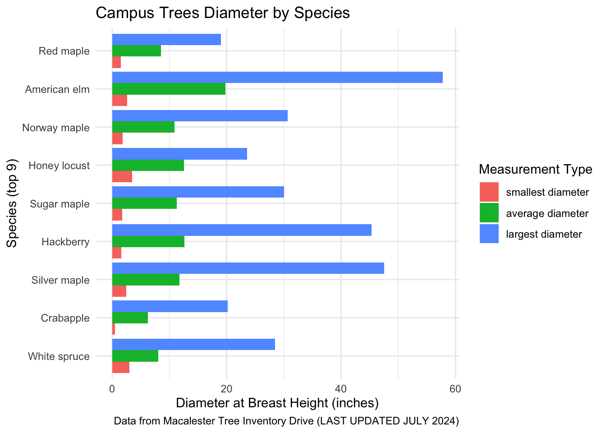
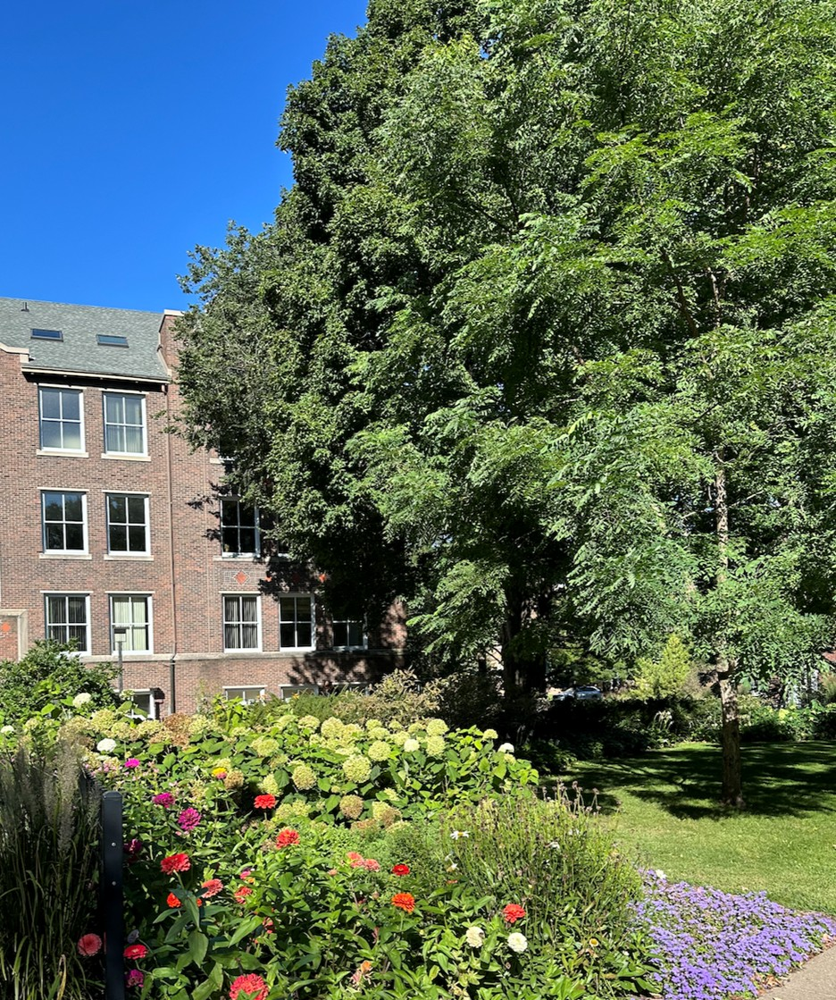
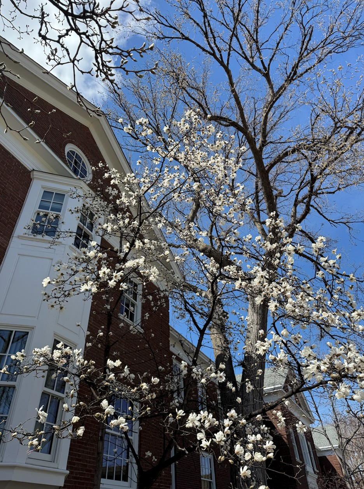

Trees of Macalester
The Trees of Mac
Our Motivation
As Macalester College students, we are constantly surrounded by the trees on campus. Walking to and from classes, meetings, and practices, it is hard to miss the 953 different trees around campus. Each tree has its own story and we wanted to dive deeper into them and explore. Understanding how the trees are planted around campus, the different species present, as well as their sizes are all things that we wanted to explore. In this project, the questions we are exploring are:
What species of trees are planted around Macalester’s campus?
What is the relationship between species and diameter?
Are there patterns in how species are planted?

Background on the Data
- Where did we get it? Who created it? What was included?
We researched nature topics specifically related to Macalester so that we could learn more about our campus and the outdoors, and found this amazing shared drive created by AIDAN REYNOLDS (’25) AND THE MACALESTER SUSTAINABILITY OFFICE that included two main files: a CSV and a shape file.
Macalester Trees Inventory (Shared Google Drive) Click here to vist the drive!
Summary Statistics
- What does some of the Data preliminarily look like? To begin we wanted to know what the most common tree species were on campus and did Exploratory Data Analysis (EDA) to get to know our data.
Result: The top 10 most common tree SPECIES on campus are :
Top 10 Common Trees - Table
| Species | Count |
|---|---|
| White spruce | 100 |
| Crabapple | 78 |
| Silver maple | 66 |
| Hackberry | 65 |
| Sugar maple | 64 |
| Honey locust | 55 |
| Norway maple | 54 |
| American elm | 31 |
| Red maple | 31 |
| Eastern redbud | 27 |
This then lead us to wonder…
Why is it that these trees are most common on campus? One-hundred White spruce trees is a lot of one tree. Does the sizing of the trees play any role in this? Is it possible that if a tree species is very small that it could skew the number of them that are planted on campus because they take up lots of or very little room?
So with these questions in mind we than explored more about the tree species diameters. First looking at all of the data and than narrowing in on the top most common 9 species and their diameters.
Shay’s plot :
I created this plot to examine if there was any connection between these two aspects (species and diameter) on campus.
- Explanation and Exploration
- What do we learn? What further questions does this lead to?
This bar graph shows the top 9 species on campus and their smallest average and largest diameters recorded from its on campus population. We wondered if the tree size influenced how many of that species were planted on campus, and as you can see the average diameters for each of these top 9 species are on the smaller to medium side, confirming that for the most part Macalester plants more of the tree species that aren’t the largest trees. That makes sense for a college in the city. However, you can see that within these species there is a huge range of diameters between smallest and largest. So, that is why we decided to look at where the trees were located on campus to better understand the patterns of where these most popular species were planted because it’s hard to understand by strictly looking at numbers.
Across Campus

After exploring these diameters and the relations to the species we wanted to learn more about how species are planted across campus. To do this we wanted to explore the trees in their place and positioning around Macalester’s campus. As shown in the map below, Trees are planted across Macalester’s campus - the map displays the trees on campus and if you hover over each the species will be shown. Additionally, if you want to explore by species further, you can select each of the Top 9 species you want to see and each has a different color.
Seeing all the trees on campus and their various species, we learn that there are some patterns. Certain species appear to be planted more around campus while others are very spread out without patterns. There are so, so many different species of trees planted around campus, which is so cool. The boundaries of campus are lined with trees. Continuing this exploration it would be interesting to explore when various trees were planted, and see if there are further patterns!
Limitations and Future Work
Work could benefit from exploring tree species specific traits.
Work could benefit if more data was available (tree age, tree health, tree height)
Work could benefit from understanding Macalester tree species patterns vs Minnesota as a state.